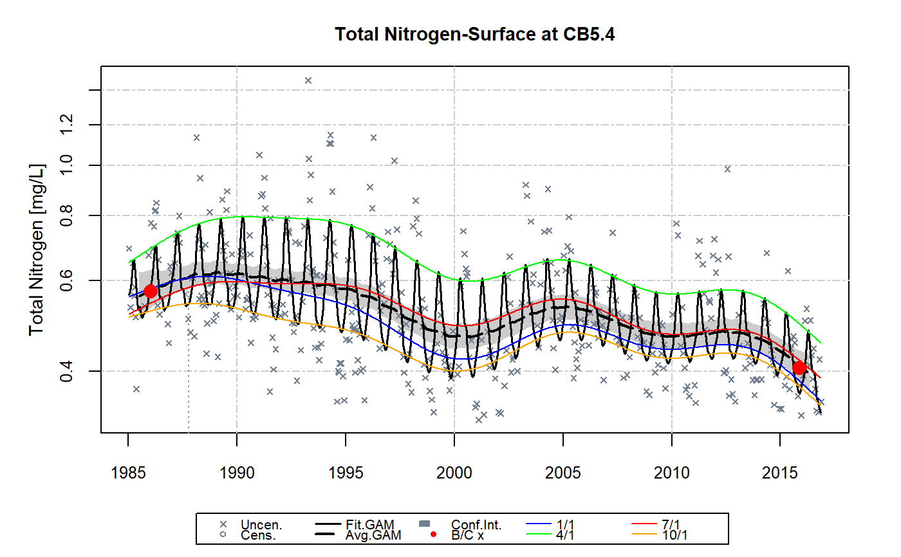

Compute an estimate of difference based on GAM results
gamDiff( gamRslt, iSpec, analySpec, base.yr.set = NA, test.yr.set = NA, doy.set = NA, alpha = 0.05, flow.detrended = NA, salinity.detrended = NA )
| gamRslt | output from gam model |
|---|---|
| iSpec | data set specifications (see details for required content) |
| analySpec | analytical specifications |
| base.yr.set | vector of years used for baseline period |
| test.yr.set | vector of years used for test period |
| doy.set | vector of days used to establish sub-annual analyses (see details) |
| alpha | alpha level for computing confidence intervals |
| flow.detrended | data generated by detrended.flow. Default = flow.detrended. |
| salinity.detrended | data generated by detrended.salinity. Default = detrended.salinity. |
Returns a nest list that includes the base and test years, doys, period means in analyzed units, period means in observed units, percent change, difference estimate, difference estimate in observed units, standard error, confidence intervals, t statistic, p value, and alpha level. The alpha level corresponds to the confidence intervals. The first list (gamDiff.regular) uses the computed model to estimate differences and is applicable for GAM formulas that do not involve an intervention term. The second list (gamDiff.adjusted) performs computations by projecting the most recent intervention (e.g., the current lab method) to all time periods.
iSpec is a list containing information about the date range and transformations. Specifically, iSpec must include iSpec$yearBegin, iSpec$yearEnd, iSpec$centerYear corresponding to beginning year of record, ending year of record and centering year. Also, iSpec must include iSpec$transform and iSpec$logConst. (See online help for selectData for more information on these values.)
base.yr.set and test.yr.set represent two time periods used to compare differences. For example, base.yr.set=c(1999,2000) and test.yr.set=c(2013,2014) would compare GAM predictions from 1999-2000 versus 2013-2014. There is no particular limit to the number of years included in the specification for base.yr.set and test.yr.set. For example, a user could specify c(2001:2002,2004) to use the years 2001, 2002, and 2004, skipping 2003 because 2003 was an abnormal year (particularly wet, particularly dry, hurricanes, etc.).
base.yr.set and test.yr.set must be within the years specified by the range from iSpec$yearBegin to iSpec$yearEnd (inclusive). If not, this function defaults to using the first two years (or last two years) of record. If base.yr.set and test.yr.set are left to their default values of NA, then the first two and last two years will be used
doy.set represents the days of year for which GAM predictions are made and used to compute base.yr and test.yr means. For example doy.set= c(15, 46, 75, 106, 136, 167, 197, 228, 259, 289, 320, 350) would result in the 15th of each month being used in the analysis; whereas doy.set= c(15, 46, 75) would just use Jan-15, Feb-15, and Mar-15. (Keep in mind that this package uses a 366 day calendar every year such that Mar-1 is always day 61, regardless of leap year.) If doy.set is left to the default value of NA, then c(15, 46, 75, 106, 136, 167, 197, 228, 259, 289, 320, 350) is used.
The baseDay function has been added to this package from the smwrBase package.
# run analysisOrganizeData function to create the list analySpec dfr <- analysisOrganizeData (dataCensored, report=NA) df <- dfr[["df"]] analySpec <- dfr[["analySpec"]] # set GAM models to just one model analySpec$gamModels <- list( list(option=2, name= "Non-linear trend with Seasonality (plus Interactions)", model= "~ cyear + s(cyear) + s(doy,bs='cc')+ ti(cyear,doy,bs=c('tp','cc'))", deriv=FALSE)) # run GAM for a single water quality variable, station and layer gamResult <- gamTest(df, 'tn', 'CB5.4', 'S', analySpec=analySpec)#> #> #### Total Nitrogen - Non-linear trend with Seasonality (plus Interactions)#> #> #> #> #> *Table: GAM Analysis of Variance.* #> #> #> #> #> #> |Type | Source| edf| F-stat| p-value| #> |:----------------|-------------:|----:|-------:|-------:| #> |parametric terms | cyear| 1.00| 0.4344| 0.5102| #> |smoothed terms | s(cyear)| 7.13| 3.9607| 0.0001| #> |" " | s(doy)| 6.41| 19.9427| <0.0001| #> |" " | ti(cyear,doy)| 5.49| 1.3716| 0.0021| #> #> #> #> #> *Table: GAM Parameter Coefficients.* #> #> #> #> #> #> |Parameter | Estimate| Std. Err.| t value| p-value| #> |:-----------|---------:|---------:|--------:|-------:| #> |(Intercept) | -0.648238| 0.019521| -33.2073| <0.0001| #> |cyear | -0.013368| 0.020281| -0.6591| 0.5102| #> #> #> #> #> *Table: GAM Diagnostics.* #> #> #> #> #> #> | AIC| RMSE| Adj. R-squared| #> |-------:|------:|--------------:| #> | -135.64| 0.2021| 0.4364| #> #> #> #> #> *Table: Estimates of Change from 1985-2016.* #> #> #> #> #> #> |Calculation | Estimate | #> |:--------------------------------------------|:------------------:| #> |Baseline log mean (geometric mean) | -0.5592 (0.5717) | #> |Current log mean (geometric mean) | -0.9008 (0.4062) | #> |Estimated log difference | -0.3416 | #> |Std. Err. log difference | 0.058 | #> |95% Confidence interval for log difference | (-0.4552 , -0.228) | #> |Difference p-value | <0.0001 | #> |Period of Record Percent Change Estimate (%) | -28.94% |# use gamDiff to replicate estimates of change calculated in the above gamDiff(gamRslt=gamResult[["gamOutput2"]]$gamRslt, iSpec=gamResult$iSpec, analySpec=analySpec, base.yr.set = NA, test.yr.set = NA, doy.set = NA, alpha = 0.05)#> $gamDiff.regular #> $gamDiff.regular$base.yr #> [1] 1985 1986 #> #> $gamDiff.regular$test.yr #> [1] 2015 2016 #> #> $gamDiff.regular$doys #> [1] 15 46 75 106 136 167 197 228 259 289 320 350 #> #> $gamDiff.regular$per.mn #> [1] -0.5592253 -0.9008470 #> #> $gamDiff.regular$per.mn.obs #> [1] 0.5716518 0.4062254 #> #> $gamDiff.regular$pct.chg #> [1] -28.93831 #> #> $gamDiff.regular$diff.est #> [,1] #> [1,] -0.3416218 #> #> $gamDiff.regular$diff.est.obs #> [1] -0.1654263 #> #> $gamDiff.regular$diff.se #> [,1] #> [1,] 0.05797399 #> #> $gamDiff.regular$diff.ci #> [1] -0.4552487 -0.2279948 #> #> $gamDiff.regular$diff.t #> [,1] #> [1,] -5.892673 #> #> $gamDiff.regular$diff.pval #> [,1] #> [1,] 0.000000007587802 #> #> $gamDiff.regular$alpha #> [1] 0.05 #> #> #> $gamDiff.adjusted #> $gamDiff.adjusted$base.yr #> [1] 1985 1986 #> #> $gamDiff.adjusted$test.yr #> [1] 2015 2016 #> #> $gamDiff.adjusted$doys #> [1] 15 46 75 106 136 167 197 228 259 289 320 350 #> #> $gamDiff.adjusted$per.mn #> [1] -0.5592253 -0.9008470 #> #> $gamDiff.adjusted$per.mn.obs #> [1] 0.5716518 0.4062254 #> #> $gamDiff.adjusted$pct.chg #> [1] -28.93831 #> #> $gamDiff.adjusted$diff.est #> [,1] #> [1,] -0.3416218 #> #> $gamDiff.adjusted$diff.est.obs #> [1] -0.1654263 #> #> $gamDiff.adjusted$diff.se #> [,1] #> [1,] 0.05797399 #> #> $gamDiff.adjusted$diff.ci #> [1] -0.4552487 -0.2279948 #> #> $gamDiff.adjusted$diff.t #> [,1] #> [1,] -5.892673 #> #> $gamDiff.adjusted$diff.pval #> [,1] #> [1,] 0.000000007587802 #> #> $gamDiff.adjusted$alpha #> [1] 0.05 #> #># use gamDiff to calculate changes from 2005/06 to 2013/14 gamDiff(gamRslt=gamResult[["gamOutput2"]]$gamRslt, iSpec=gamResult$iSpec, analySpec=analySpec, base.yr.set = c(2004:2005), test.yr.set = c(2013:2014), doy.set = NA, alpha = 0.05)#> $gamDiff.regular #> $gamDiff.regular$base.yr #> [1] 2004 2005 #> #> $gamDiff.regular$test.yr #> [1] 2013 2014 #> #> $gamDiff.regular$doys #> [1] 15 46 75 106 136 167 197 228 259 289 320 350 #> #> $gamDiff.regular$per.mn #> [1] -0.6318804 -0.7723996 #> #> $gamDiff.regular$per.mn.obs #> [1] 0.5315913 0.4619034 #> #> $gamDiff.regular$pct.chg #> [1] -13.1093 #> #> $gamDiff.regular$diff.est #> [,1] #> [1,] -0.1405192 #> #> $gamDiff.regular$diff.est.obs #> [1] -0.06968791 #> #> $gamDiff.regular$diff.se #> [,1] #> [1,] 0.0380542 #> #> $gamDiff.regular$diff.ci #> [1] -0.21510407 -0.06593436 #> #> $gamDiff.regular$diff.t #> [,1] #> [1,] -3.692607 #> #> $gamDiff.regular$diff.pval #> [,1] #> [1,] 0.0002500019 #> #> $gamDiff.regular$alpha #> [1] 0.05 #> #> #> $gamDiff.adjusted #> $gamDiff.adjusted$base.yr #> [1] 2004 2005 #> #> $gamDiff.adjusted$test.yr #> [1] 2013 2014 #> #> $gamDiff.adjusted$doys #> [1] 15 46 75 106 136 167 197 228 259 289 320 350 #> #> $gamDiff.adjusted$per.mn #> [1] -0.6318804 -0.7723996 #> #> $gamDiff.adjusted$per.mn.obs #> [1] 0.5315913 0.4619034 #> #> $gamDiff.adjusted$pct.chg #> [1] -13.1093 #> #> $gamDiff.adjusted$diff.est #> [,1] #> [1,] -0.1405192 #> #> $gamDiff.adjusted$diff.est.obs #> [1] -0.06968791 #> #> $gamDiff.adjusted$diff.se #> [,1] #> [1,] 0.0380542 #> #> $gamDiff.adjusted$diff.ci #> [1] -0.21510407 -0.06593436 #> #> $gamDiff.adjusted$diff.t #> [,1] #> [1,] -3.692607 #> #> $gamDiff.adjusted$diff.pval #> [,1] #> [1,] 0.0002500019 #> #> $gamDiff.adjusted$alpha #> [1] 0.05 #> #>